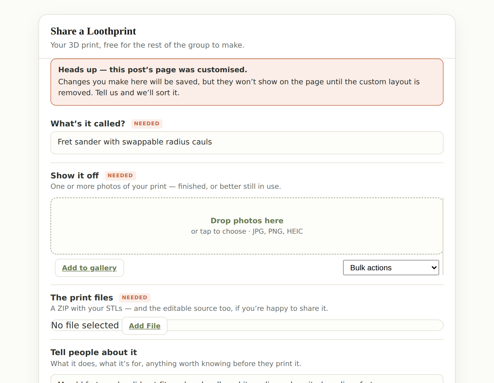
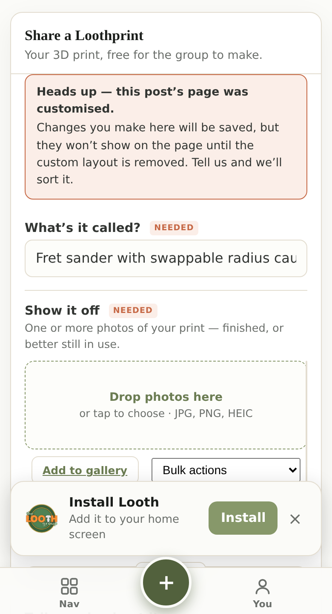

A decision I need from you before members get the edit form. It is not about the form — that part works. It is about something that already exists on your site and quietly disagrees with it.
A Loothprint's page is built from its fields. You fill in the title, the photos, the files and the licence, and the page assembles itself. That is why this whole job was small.
But every Loothprint already has an “Edit page” button for its author, which opens the block editor and lets them rearrange the page itself. The moment anyone uses it, that hand-made layout is saved — and from then on the page stops following the fields.
This is not something the new form introduces — it is true on your site today, between the page editor and the fields. The new form just makes it much easier to run into.
I assumed this would affect a handful of posts. It does not.
So the notice above would appear on almost every Loothprint anyone edits, not occasionally.
But those pages were almost certainly not hand-arranged one by one. Twenty-four shapes across a hundred and seventy posts is a machine's fingerprint, not a person's — 44 of them share one identical shape. They look like the output of the conversion that brought this content into the current page system, later opened in the admin editor. I have not proved who or what made them and I will not state it as fact — but it changes what Option A costs, so you should have it before you choose.
Until you rule, it refuses to pretend. If a post's page has been customised, the form says so before you type anything:


That is a stopgap, not an answer. It stops the form lying, but it still leaves a member stuck with a page that ignores them. One of the three below is the actual fix.
Yes — and I checked rather than assumed. On four real member-owned Loothprints with stored pages, the author does get the Edit page button and it opens. So those 169 posts are not stranded.
But it is a partial editor, and the gap is the part that matters. It edits the page's words and pictures — headings, body text, captions, labels, and swapping an image or a file shown on the page. It writes only the page. It never touches the post's own details.
So "they can already edit them" is true for the text and false for the details. A member who wants to correct a licence, re-file a print under the right type, or replace the ZIP has no front-end route to it today — and that is exactly what the new form does.
It is a reasonable thought, and I looked at it properly. It does not hold, for one specific reason: the split will not stay put.
The Edit page button is offered on every published Loothprint — including brand-new ones posted through the new form, which start with no stored page at all. I confirmed that on a fresh post. So the first time anyone opens the page editor on a new Loothprint, that post quietly joins the old group and its details stop showing.
Meaning a split is not a decision you can make once. It would drift: every post ends up in the "old" bucket eventually, one accidental click at a time, and nothing announces it. That is why I would still rather take A or B — those are stable — than adopt C as a permanent arrangement. C remains fine as a holding position while you decide; it is just not a resting place.
Take “Edit page” off Loothprints. The page is the fields, so there is nothing meaningful to arrange by hand — and one editor cannot disagree with itself.
Keep both editors. When a member saves the form, the custom layout is dropped and the page goes back to following the fields.
Both editors stay, the page stays frozen once customised, and the notice tells the member their details will not show.
A, B or C. If you lean towards A, do not take it from me that the stored pages are disposable — say so and I will render a few of them both ways, side by side, so you can see what would actually change before anything is touched. That is a short job and it is the honest order to do it in.
Nothing is switched on. The compose and edit forms are behind a flag that
is off; /compose/ still answers 404 on the site. This decision only needs making before that
flag goes on, not before anything ships. The other two pages:
the form · the toggle in the composer.